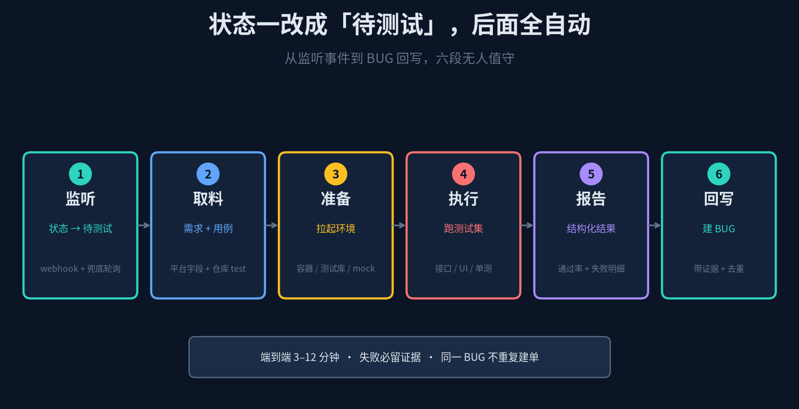
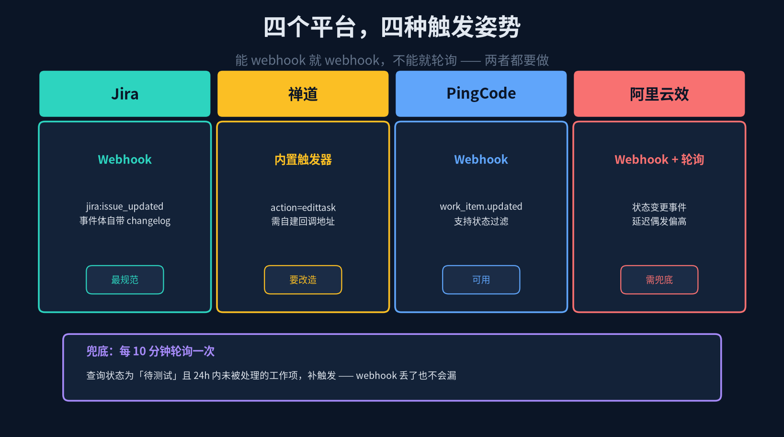
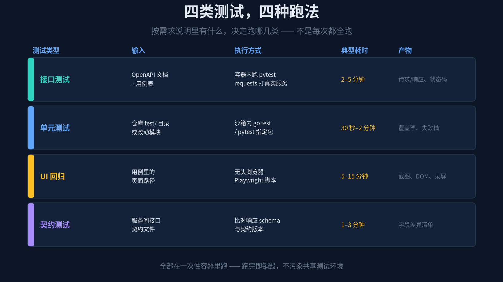
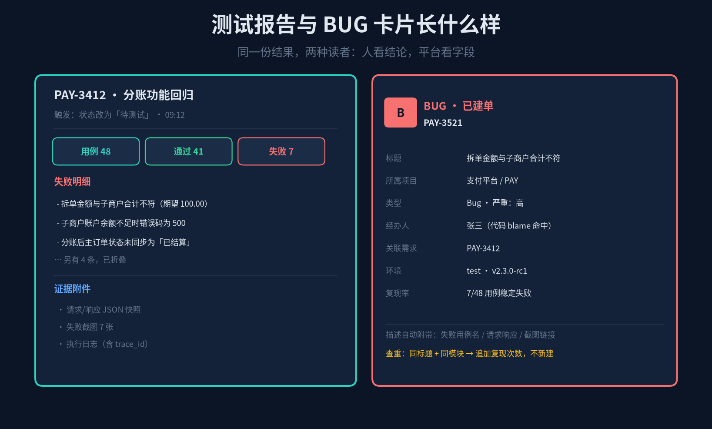

状态改成「待测试」的那一刻
测试其实已经开始跑了
先还原一个特别常见的日常：
· 下午三点，研发在禅道把任务拖到「待测试」，然后在群里发一句"我这个好了，@测试"
· 测试同学正在测另一个需求，看到消息回一句"稍等，我排一下"
· 半小时后开始配环境、翻需求文档、找用例、手点一遍
· 测出三个问题，再手动截图、写复现步骤、挨个提 BUG
真正花在"跑测试"上的时间不到三成，剩下七成是搬运——把需求搬到脑子里、把环境搬起来、把结果搬到平台上。
这篇讲的是：让 Hermes 监听"状态变成待测试"这个事件，自动取需求、取用例、拉起环境、跑测试、出报告、把 BUG 提回平台。人只在最后看一眼报告。
它不是替代测试，是把测试同学的重复劳动抽掉，让他有时间去设计那些"自动化测不出来"的用例。
1
概念：事件驱动，不是定时驱动
先跟上一篇做个区分。前面讲的日报是时间触发——每天九点，不管有没有变化，到点就跑。这个场景是事件触发——有人改了状态，才跑。
差别不只是调度方式，而是整个系统的设计取向：事件驱动要求"快"和"幂等"，定时驱动要求"稳"和"全"。测试这件事必须快，因为研发在等结果；也容易重复触发，因为状态可能被来回改。

图 1 · 六段流水线：监听 → 取料 → 准备 → 执行 → 报告 → 回写
三段职责，别混在一起写
触发段 —— 只判断"这个事件该不该跑"，不干别的。收到 webhook、校验签名、查幂等表、决定丢弃还是入队。
执行段 —— 只负责"跑出结果"。取料、起环境、跑用例、收产 artifact。这一段的输出必须是结构化的 JSON，不是一堆日志。
回写段 —— 只负责"把结果落到平台"。写报告、建 BUG、改状态、通知。失败要能重试，不能重复建单。
三段的失败模式完全不同：触发段挂了是"漏测"，执行段挂了是"跑了但没结果"，回写段挂了是"测出来了但没人知道"。分开写，才能分开告警、分开重试。
2
触发：监听状态变化，还要兜住漏网之鱼
四个项目管理平台对"状态变更"的支持程度差别很大。Jira 和 PingCode 开箱有 webhook；禅道的触发器要自己搭回调地址；云效的事件有偶发延迟。

图 2 · 四平台触发方式对比，加一条不可避免的兜底轮询
Jira：事件体自带 changelog，这是最好的输入
`jira:issue_updated` 事件里的 `changelog.items` 会明确告诉你"哪个字段从什么变成了什么"。这样你不需要再查一次接口判断是不是状态变更。
{
"webhookEvent": "jira:issue_updated",
"issue": {"key": "PAY-3412", "fields": {...}},
"changelog": {
"items": [{
"field": "status",
"fromString": "In Progress",
"toString": "Ready for Test"
}]
}
}
判断逻辑就变成：`field == "status"` 且 `toString` 命中你们的"待测试"状态名 → 触发。注意这里又要做一次归一——不同公司给这个状态起的名不一样，有的叫 Ready for Test，有的叫"提测"，有的叫 QA Review。跟上一篇一样，映射表放配置里。
三道保险，缺一不可
① 签名校验 —— Jira 用 `X-Hub-Signature`，PingCode 有 secret，禅道要自己加 HMAC。不校验的话，这个回调地址就是一个人人都能触发的测试任务发射器。
② 幂等 —— 幂等键用 `{work_item_id}:{status_from}:{status_to}:{changelog_id}`。同一张单子从"进行中"改到"待测试"，只跑一次；研发改回去再改过来，`changelog_id` 变了，算新事件，允许重跑。
③ 防抖 —— 60 秒窗口。研发经常"手滑拖到待测试又拖回去"，或者连改三个字段触发三次事件。一个简单的 sliding window 就能挡掉大部分无效触发。
兜底轮询：不是因为 webhook 不靠谱，是因为它一定会丢
即使四个平台都配了 webhook，也要再加一条 cron：每 10 分钟查一次"状态为待测试、且 24 小时内没有被处理过"的工作项。命中就补触发。
hermes cron create "every 10m" \
"查找状态为待测试、且 24h 内无测试记录的工作项，补触发测试。" \
--deliver local --name "test-sweeper"
原因很现实：服务重启期间的事件、平台侧的重试丢失、内网穿透断连——总会有漏的。这条轮询不贵，每 10 分钟一次查询而已，但它是整套系统"不丢单"的底线。
3
取料：测试用例到底从哪来
这是整套系统里最容易卡住的地方。很多人做到这一步才发现：平台上的需求描述只有三行，测试用例根本不存在。
按可用性排四个来源
第一优先：用例管理平台的用例。禅道的用例库、PingCode 的 Testhub、Jira 配 Xray/Zephyr，都是结构化的"前置条件 / 步骤 / 预期结果"，直接能转成自动化脚本的骨架。
第二优先：代码仓库里的测试。需求关联的 MR 改了哪些模块，就去跑那些模块对应的 `test/` 目录。这是最省事的一类——用例已经写好了，只是没人跑。
第三优先：OpenAPI 文档。需求涉及哪些接口，从接口文档里拿 schema，自动生成正常流 + 边界值的接口调用。这类覆盖的是"接口约定"层面，抓得住字段类型错误、必填缺失这类问题。
第四优先：让 Agent 从需求文字里生成。前三样都没有的时候，把需求描述 + 验收标准喂给 Agent，让它生成一组冒烟用例。这类用例必须标 `confidence: low`，而且不参与"必须全绿"的判定。
Agent 生成用例的正确姿势
别让它"写测试代码"，让它"列测试点"。前者输出质量极不稳定，后者才是它擅长的。输出结构：
[{
"point": "拆单金额等于各子商户金额之和",
"method": "api",
"target": "POST /api/v2/settlement/split",
"input": {"order_amount": 100.00, "split": [40, 60]},
"expect": {"code": 0, "items": 2, "sum": 100.00},
"source": "requirement_text",
"confidence": "low"
}]
这些测试点交给执行层根据 `method` 分派——api 的直接拼请求，ui 的找 Playwright 脚本模板，db 的走只读查询校验。Agent 不碰执行细节，只负责"该测什么"。
4
执行：每次都用干净的容器
自动化测试最大的敌人不是用例写得不好，是环境互相污染。A 的测试改了库里一条数据，B 的断言就挂了；上一轮留下的脏数据让这一轮的"余额不足"用例永远不通过。

图 3 · 四类测试的输入、跑法与产物
一次触发 = 一个一次性沙箱
Hermes 的沙箱执行能力（Docker / E2B / Cube 这类后端）在这里正好合用。每次触发起一个干净容器，里面预装好：被测服务的镜像、测试依赖、独立的测试数据库、必要的 mock 服务。
跑完立刻销毁。这样有几个直接的好处：可以并行跑多个需求、不会互相踩数据、失败一定是真失败（不是环境问题）、复现也简单——同一个镜像重跑就是。
代价是启动慢一点。冷启动 20–40 秒，比起"测试同学排队半小时"，这个成本可以忽略。
跑哪几类，看需求里有什么
别每次都全跑。规则很简单：有什么料就做什么菜。
· 需求里有接口路径 + OpenAPI → 接口测试
· 有页面路径 + 已存在的 Playwright 脚本 → UI 回归
· 改动模块有 `_test` / `test_` 文件 → 单元测试
· 服务间有契约文件 → 契约测试
四类都跑大概 8–15 分钟，只跑接口测试 2–5 分钟。先出快的那批，让研发在 3 分钟内看到反馈，慢的 UI 回归在后面补。
失败重试一次，但要区分类型
断言失败不该重试——重试只会浪费时间并掩盖真问题。只有超时、连接失败、503 这类基础设施型失败才重试一次。
更重要的是在报告里把两类失败分开统计。测试同学看一眼就知道"这轮 7 个红，其中 2 个是环境抖动"。
5
报告：一份结果，两种读者
测试报告最忌讳"全绿就一句话，红了就糊一屏日志"。两种读者需要的东西完全不同：人要看结论和证据，平台要的是结构化字段。

图 4 · 左边的报告给人看，右边的卡片给平台填
结构化结果：一切下游的输入
{
"run_id": "PAY-3412-20261103-0912",
"work_item": "PAY-3412",
"env": "test · v2.3.0-rc1",
"suite": {"total": 48, "passed": 41, "failed": 7},
"duration_sec": 438,
"failures": [{
"case": "split_sum_matches",
"type": "assertion",
"expected": 100.00,
"actual": 99.98,
"artifacts": ["request.json", "response.json", "trace.log"]
}],
"flaky": 1
}
`flaky` 这个字段很关键。把"时好时坏"的用例单独计数，不要混进 failed——否则研发会开始怀疑所有红色，最终忽略全部红色。
给人看的报告，三段就够
第一段：三个数 —— 用例总数 / 通过 / 失败。让人 3 秒判断"要不要继续看"。
第二段：失败明细 —— 每条一行，写人话："拆单金额与子商户合计不符（期望 100.00）"。别贴堆栈，堆栈放附件。
第三段：证据链接 —— 请求响应快照、截图、日志。让人点一下就进得去。
超过 8 条失败就折叠，只列前 8 条 + "另有 N 条"。全列出来等于没有重点——研发看到 40 条红色只会关掉窗口。
报告同时投到三个地方：项目群（卡片）、工作项评论（详情链接）、测试负责人私信（仅失败时）。全通过的时候只发群里一条"全绿"，不打扰任何人。
6
回写：建 BUG 是最容易搞砸的一步
"自动提 BUG"听起来很爽，做不好会变成灾难——同一个问题每天提一遍，两周后 Jira 里全是重复单，研发直接把机器人拉黑。
按失败聚类，不是按用例建单
7 个失败用例，可能只是 2 个根因。直接 7 张单子，等于把噪音放大七倍。
聚类的键是"失败指纹"：`hash(模块 + 接口路径 + 错误类型 + 期望/实际差异的关键字段)`。同一个指纹的用例合并成一张 BUG，描述里列出所有受影响的用例名。
fingerprint = sha1(f"{module}|{api}|{err_type}|{diff_key}")
# 已存在同指纹的未关闭 BUG → 追加 comment，不新建
# 不存在 → 新建，标记 auto-test 来源
一张好 BUG 单该有的字段
标题 —— 现象，不是用例名。"拆单金额与子商户合计不符"，不是 "test_split_sum_matches failed"。
复现步骤 —— 请求参数、前置数据、环境版本。照抄就能复现。
经办人 —— 用上一篇讲的归属链路：git blame 命中改动这段代码的人，兜底用模块 owner。
关联需求 —— 填触发这次测试的工作项 ID。这样需求进度和 BUG 就串起来了。
严重级别 —— 别设成"高"就完事。规则：主流程断言失败 = 高，边界值失败 = 中，UI 文案差异 = 低。
要不要自动把状态改回"开发中"
这是个需要谨慎的选择。技术上做得到，但会打破研发的工作流习惯，也容易让"待测试"这个状态失去意义。
建议：只改一个"测试结论"自定义字段（通过/不通过），不动主状态。把状态流转的权力留给人，机器人只提供事实。
真要改，也让它在"连续两轮同类失败"之后才动手，而不是第一次红就翻状态。
7
配置与使用
第一步：打开 webhook 接收
# ~/.hermes/.env
WEBHOOK_LISTEN=0.0.0.0:8787
WEBHOOK_SECRET=jira-hmac-secret
# ~/.hermes/config/hooks.yaml
hooks:
test-on-ready:
path: /hook/jira
verify: hmac-sha256
filter:
field: status
to: ["Ready for Test", "待测试", "提测"]
debounce_sec: 60
这个 hook 只做一件事：把事件转成一条"测试任务"塞进队列。真正的执行由另一个 Agent 任务消费。接收和执行分开，是为了 webhook 能秒回 200——平台侧的超时通常只有几秒，你不能让它等一个十分钟的测试跑完。
第二步：起执行器和兜底
# 消费队列，每次触发跑一轮
hermes cron create "every 1m" \
"从测试队列取任务，取需求与用例，起沙箱执行，
生成报告并回写 BUG。" \
--skill auto-test --deliver local --name "test-runner"
# 兜底补触发
hermes cron create "every 10m" \
"扫描漏掉的待测试工作项，补入队。" \
--deliver local --name "test-sweeper"
用每分钟一次的 cron 消费队列，比常驻守护进程简单得多——不用管进程存活，Hermes 自己会起会话。队列空的时候脚本立刻返回，零成本空转。
第三步：先只跑接口测试
上线第一天不要开全套。先只做"接口测试 + 只建 BUG 不发通知"，跑一周，人工比对结果，看误报率。
# ~/.hermes/config/auto-test.yaml
enabled_suites: [api] # 只开接口测试
dry_run: true # 只出报告，不建 BUG
notify_on: never # 先不打扰任何人
min_pass_rate: 0.9 # 低于 90% 才认为这轮有问题
`dry_run` 关掉之后，先只开 `notify_on: failure`，观察两周。误报率稳定在 10% 以下，再把通知开到群里。
第四步：怎么判断它到底有没有用
· 测出来的有效 BUG 数 / 建单总数 —— 低于 30% 说明噪音太大，回去调用例
· 平均反馈时长 —— 从状态改为待测试到第一份报告，目标 5 分钟内
· 测试同学的等待时间 —— 这是最真实的指标，人少了多少"等环境、等用例"的时间
第一个指标下降是正常的，说明你在收紧；第四个指标不动，说明你只是把一个手动流程换成了自动流程，没省到真正的瓶颈。
8
边界：它替不了测试工程师
① 需求描述写得烂，它测不出东西。"优化结算体验"这种需求，喂给谁都没用。这套系统的上限完全取决于需求文档和用例的质量。
② UI 测试天生脆弱。改一个按钮位置、加一个弹窗遮罩，脚本就全红。这类建议只做核心路径，而且必须有稳定选择器约定。
③ 它不理解业务。"这个金额差 2 分钱算不算问题"——机器只按断言的容差判断，测试同学知道这背后是四舍五入规则。这类判断只能靠人补。
④ 数据和权限是红线。绝不能用生产数据跑自动化测试，测试账套、脱敏数据、独立租户，一样都不能省。这也不是工具能保障的，是流程。
⑤ 假失败会毁掉信任。一旦群里出现"机器人又误报"，两次之后所有人都会忽略它。宁可少跑，不可乱报。
说句实在话。
很多团队做自动化测试失败，不是因为技术不够，是因为一开始就想"全覆盖"——几百条用例、四类测试、所有分支，一次性铺开，然后被误报淹没。
正确的起点很朴素：挑一条最高频的接口，写 10 个用例，让它跟着"待测试"自动跑。测出来的第一个真 BUG 被研发认领修复，这件事就算跑通了。剩下的，是慢慢加。
—— 系列第八篇，完 ——
往期回顾：
① Hermes 连接企微 & 飞书 · ② A2A + SDLC 六阶段 Pipeline
③ 企业知识库构建 · ④ WeKnora 活知识库
⑤ 业务群自动建单闭环 · ⑥ 定时任务每日项目简报
⑦ 代码自动编译成知识